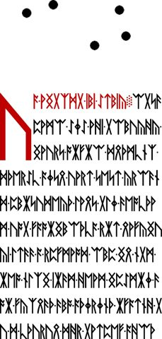

Dots and punctuation
Find five-dot arrangements on LP2-07 and LP2-23, three-dot rows on LP2-33 and LP2-39, and small punctuation clusters.
“Dots” can mean several visibly different things in Liber Primus. Large dots separated by wide spaces, small marks between runes, and compact multi-dot clusters should not be treated as one symbol just because a transcription uses similar punctuation for them.
Five large dots on LP2-07 and LP2-23
LP2-07 has five large black dots beneath its red closing line. They form a loose arrangement rather than one straight row. Smaller specks also appear beside the upper spiral drawings, so “the dots on page 7” should specify which group is meant.
See spirals and branching borders for the surrounding LP2-03–07 group.
LP2-23 also has five large dots, this time above the text. Their placement differs from the group below the text on LP2-07. A relationship between these arrangements would need a specified comparison; the shared count alone does not establish a code.

Continue with the Mayfly group and insect imagery.
Large separated dots
LP2-33 has three conspicuous black dots between two blocks of text. LP2-39 also has a separated row of three dots. These are useful starting points when someone remembers “the page with dots.” This pair is a set of illustrated examples, not an exhaustive dot inventory of all 75 pages.


Small marks and compact clusters
The LP2-00–02 inventory records punctuation separately from rune shapes. Its measured regions include one-, four-, and thirteen-component groups. A “component” is a connected set of dark pixels under a specified threshold. It is not automatically one intentional dot: touching marks can merge, and tiny specks can be excluded.
| Page | Punctuation regions | Recorded groups | Red punctuation |
|---|---|---|---|
| LP2-00 | 58 | 56 × one; 1 × four; 1 × thirteen | One one-component region and the thirteen-component region |
| LP2-01 | 62 | 57 × one; 5 × four | None under the recorded rule |
| LP2-02 | 38 | 36 × one; 1 × four; 1 × thirteen | The thirteen-component region |
The printed mark and the exported character
In the archive notation, a comma represents a three-dot symbol; a period is a clause separator, and an ampersand is a paragraph separator. These are editorial conventions. They are not instructions to insert the prime value of a comma, reset a key, or skip a rune.
One exported character can stand for visually different marks. Before a punctuation-based experiment, identify the exact image regions and the precise sequence you are testing. Otherwise a result may describe the transcriber’s decisions rather than the printed manuscript.
Inspect and reproduce
- Open an opening-page record and expand “Recorded punctuation regions.”
- Use “Inspect region” to compare the stored rectangle against the full image.
- Follow the opening-page reproduction instructions to rerun the pixel counts.
For the measurement rules, see image regions and connected components. For archived versus reviewed punctuation, see the punctuation review record. The large-dot examples above have not been assigned a cipher function.
Related visual features
The repeated cuneiform-like mark · Möbius and the crossed loop · Illustrated index
Manuscript pages discussed
LP2-07 · LP2-23 · LP2-33 · LP2-39 · LP2-00 · LP2-01 · LP2-02